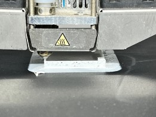
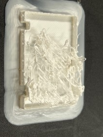

Material Thinking
Experiment 5
1. What did I aim to do?
Simulate give-up handmade effect by machine
2. Which question did I ask of my material?
Interior structure
3. Which steps did I take and/or methods did I use?
Printing speed up (*2)
2. Stop printing half-way

